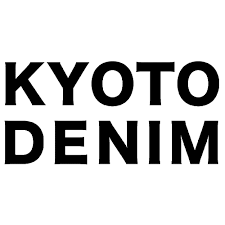

Kyoto Denim
Hand-Painted Yuzen Denim Bags & Textiles | Craft Heritage & Circular Economy | Kyoto, Japan

At a Glance
| Type | Artisanal textile and bag manufacturer |
|---|---|
| Location | Kyoto, Japan |
| Founded | 2007 |
| Primary Craft | Hand-painted Yuzen dyeing on denim |
| Core Product | SIZUKU BAG and custom Yuzen denim products |
| Mission | Preserving and revitalizing Kyoto's Yuzen textile tradition through innovation |
| Website | www.kyoto-denim.jp |
Company Overview
Kyoto Denim is an artisanal manufacturer specializing in hand-painted Yuzen denim bags and textiles. Founded in 2007, the company represents a distinctive bridge between Kyoto's 400-year-old Yuzen textile tradition and contemporary sustainable fashion. Each piece is crafted by hand, applying traditional Tegaki Yuzen (hand-painted Yuzen) techniques to high-quality denim, creating unique, wearable art.
The company embodies a mission to preserve Japan's traditional craft heritage while creating commercially viable products that appeal to a modern, environmentally conscious consumer base. By revitalizing the Yuzen craft tradition—which had declined sharply as the kimono industry contracted—Kyoto Denim offers an economic alternative for Yuzen artisans and keeps the craft alive through contemporary applications.
Background: Tegaki Yuzen and the Kimono Industry Crisis
Yuzen Heritage and Traditional Craft
Yuzen is a hand-painted dyeing technique developed in Kyoto during the Edo period (1603–1868). The technique involves layering multiple colors through hand-painting and paste-resist dyeing, creating intricate floral and naturalistic patterns traditionally used in high-end kimono and formal wear. Tegaki Yuzen specifically refers to entirely hand-painted Yuzen (no stencils), the most labor-intensive and skilled variant.
The Kimono Industry Decline
From the 1990s onward, Japan's kimono industry entered dramatic decline. Changing lifestyles, Western fashion dominance, young people's decreasing interest in traditional dress, and the high cost of authentic kimono severely contracted demand. Yuzen artisans—many of whom are multi-generational craftspeople in Kyoto—faced potentially unsustainable livelihoods as fewer customers commissioned traditional kimono and formal wear.
Company History
R&D and Experimentation (2004–2006)
Kyoto Denim's founders spent two years experimenting with applying Yuzen techniques to unconventional materials, particularly denim. The innovation was non-trivial: Yuzen traditionally works on silk; adapting it to durable cotton denim required developing new paste formulas, dyeing techniques, and techniques to maintain color vibrancy and fastness on a different substrate.
Launch and Early Growth (2007–2019)
In 2007, Kyoto Denim officially launched, beginning with the iconic SIZUKU BAG—a denim tote bag hand-painted with Yuzen patterns. Early customers were primarily domestic tourists visiting Kyoto and Japanese design-conscious consumers. Products gained recognition in Japanese design and lifestyle publications as a distinctive "New Kyoto" craft reinterpretation.
Pandemic Pivot and Tourism Acceleration (2020–2023)
COVID-19 created both challenges (international travel cessation) and opportunities (domestic tourism recovery, online commerce growth). Kyoto Denim diversified into B2B collaborations, custom orders, and e-commerce presence.
Contemporary Period (2023–Present)
Kyoto Denim continues leveraging tourism, has expanded its product range, emphasizes sustainability narratives (durability, repairability), and positions Yuzen-denim goods as accessible luxury and cultural preservation. The company has become recognized as a cultural ambassador for Kyoto's crafts in international markets.
Product Line
- SIZUKU BAG: Flagship denim tote with hand-painted Yuzen patterns; multiple colorways and custom options.
- DARUMA: Smaller accessory bags with Yuzen dyeing.
- JAPAN CLASP BAG: Structured handbag variant with traditional Japanese clasp hardware.
- DENIGUMA: Circular fashion program allowing customers to return worn bags for recycling.
- Custom Yuzen Denim Service: Bespoke fabric dyeing for fashion designers, brands, and individual customers.
- Noren and Textile Products: Hand-painted Yuzen denim noren (door curtains) and wall hangings for home décor.
- B2B Collaborations: License designs to other brands, supply hand-dyed denim to fashion manufacturers.
Craft Philosophy and Production
Te-Shigoto (Handwork) Aesthetic
Kyoto Denim emphasizes "te-shigoto" (手仕事, literally "hand work")—the cultural and aesthetic value placed on visible human craftsmanship in Japan. Each bag bears slight variations and intentional asymmetries from hand-painting, celebrating individuality rather than industrial uniformity.
Material Selection
The company sources high-quality denim, often vintage or deadstock, reducing textile waste. Yuzen dyes are primarily natural or traditional mineral-based, many imported from heritage dye makers in Kyoto. The layering of traditional materials and techniques with contemporary silhouettes creates unique market positioning.
Location Strategy
Based in Kyoto's Yuzen artisan district, the company maintains proximity to traditional dyers, enabling direct apprenticeship relationships and reinforcing cultural authenticity. This contrasts with offshoring production to cheaper labor markets, sacrificing both craft heritage and brand narrative.
Sustainability and Social Mission
DENIGUMA Program
The DENIGUMA (denim + kuma [bear]) circular program allows customers to return worn bags for professional repair, upcycling into smaller items, or recycling. This extends product lifespan—critical for justifying the high initial retail price—and creates ongoing customer engagement.
Longevity and Durability as Sustainability
A core sustainability argument is that hand-crafted, high-quality pieces should last decades, creating lower lifetime environmental impact than fast-fashion alternatives. Marketing emphasizes durability and the aesthetic improvements that come with aging and patina.
Community Engagement
Kyoto Denim partners with Yuzen artisan communities, provides employment for traditional dyers, and sponsors cultural workshops and exhibitions highlighting the Yuzen tradition. The company frames itself as a cultural steward, not just a commercial enterprise.
Context for MBA Discussion
- Traditional craft as business model: How artisanal heritage becomes a market differentiator and justification for premium pricing.
- Sustainability as narrative: The role of cultural preservation, durability, and circular design in attracting conscious consumers.
- Tourism and geography: How location in Kyoto—a major destination—becomes a marketing asset and distribution channel.
- Scaling handcraft: Challenges and trade-offs in scaling a hand-made product; balancing growth with craft integrity.
- Heritage preservation as enterprise: Role of commercial innovation in sustaining traditional crafts that might otherwise disappear.